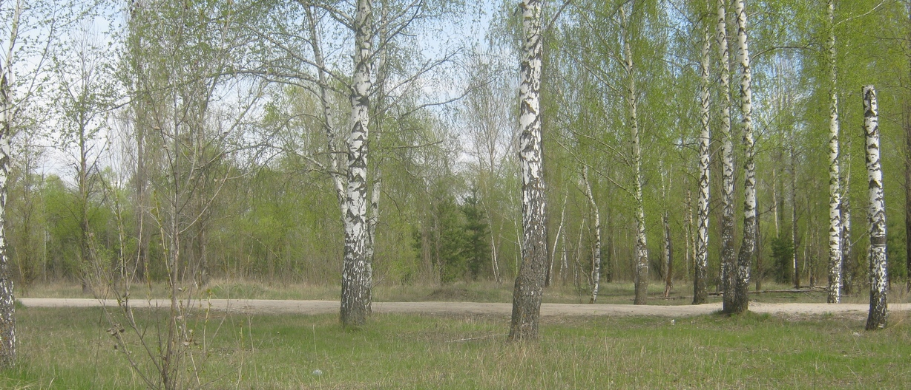
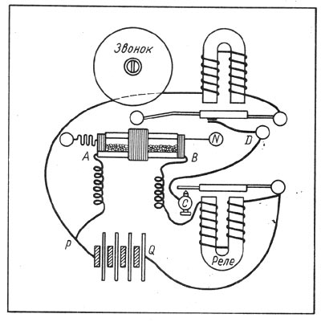

ИЗОБРЕТЕНИЕ РАДИО
Как известно, Герц не предвидел возможности применения электромагнитных волн в технике. В самом деле, было трудно увидеть в слабых искорках, которые Герц рассматривал в лупу, будущее средство связи, перекрывающее ныне космические расстояния до Венеры и Марса и позволяющее управлять самоходным аппаратом на Луне. Даже человеку с неистощимой фантазией, знаменитому писателю Жюлю Верну не удалось предвидеть радиосвязь, и герои его романа «Плавучий остров», написанного после опытов Герца, не знают способов беспроводной связи. Вообще между принципиальным открытием и его техническим приложением лежит огромное расстояние. Эйнштейн не предвидел в обозримом будущем возможной реализации соотношения Е=тс*, Резерфорд считал химерой использование атомной энергии. Только люди с особыми способностями могут найти разумное техническое воплощение научной идеи. Именно такими способностями обладал замечательный русский физик Александр Степанович Попов, продемонстрировавший примерно через год после смерти Герца первый радиоприемник, открывший возможность практического использования электромагнитных волн для целей беспроволочной связи. Александр Степанович Попов родился 16 марта 1859 г. на Урале (поселок Турьинский рудник) в семье священника. После окончания в 1877 г. общеобразовательных классов Пермской духовной семинарии он не стал продолжать духовное образование, а поступил на физико-математический факультет Петербургского университета. В университете его увлекла электротехника. Он работал монтером в товариществе «Электротехник», и первые его труды в 1882 г. были посвящены динамо-электрическим машинам. Хотя Попов был оставлен при университете для подготовки к профессорскому званию, он долго не пробыл в аспирантуре, как бы сказали сейчас, и с 1883 г. стал преподавателем Минного офицерского класса в Кронштадте, совмещая эту должность с педагогической работой в Техническом училище Морского ведомства в Кронштадте. В Минном офицерском классе Попов проработал до 1901 г., когда он был избран профессором кафедры физики Электротехнического института в Петербурге. В 1905 г. он был избран директором института и в этой должности скончался от кровоизлияния в мозг 13 января 1906г..(Даты рождения и смерти А. С. Попова указаны по новому стилю. По старому стилю А. С. Попов родился 4 марта 1859 г., а умер 31 декабря 1905 г. )
По роду своей служебной деятельности А. С. Попов был тесно связан с военно-морским флотом, и именно во флоте произошло рождение великого открытия. Исторические условия для открытия созрели, к нему разными путями в разных странах почти одновременно шли несколько людей: Попов, Резерфорд, Маркони и другие. Первым добился успеха А. С. Попов.
В 1889 г. А. С. Попов прочитал в собрании минных офицеров цикл лекций «Новейшие исследования о соотношении между световыми и электрическими явлениями» по следующей программе:
«1. Условия происхождения колебательного движения электричества и распространение электрических колебаний в проводниках.
Распространение электрических колебаний в воздухе —лучи электрической силы. Отражение, преломление и поляризация электрических лучей.
Актиноэлектрические явления — действие света вольтовой дуги на электрические заряды».
Эти лекции сопровождались демонстрациями опытов Герца. Они имели большой успех, и Морской технический комитет предложил морскому министерству повторить лекции с демонстрациями в Петербурге, в Морском музее для петербургских офицеров. «Опыты, произведенные германским профессором Герцем в доказательство тождественности электрических и световых явлений, — говорилось в этом предложении,—представляют большой интерес не только в строго научном смысле, но также и для уяснения вопросов электротехники».
Очевидно, что А. С. Попов уже говорил в своих лекциях о возможности практического использования волн Герца, и руководящие лица русского военно-морского флота заинтересовались этим. Морское министерство согласилось на повторение лекций Попова в Петербурге и выделило необходимые средства на перевозку приборов. Лекция «Об электрических колебаниях с повторением опытов Герца» состоялась в Морском музее 3 апреля 1890 г. Можно с большим основанием утверждать, что А. С. Попов был не только одним из первых в России «пропагатором герцологии» (термин Столетова), но и тем, кто сразу оценил практическое значение открытий Герца и начал решать задачу их технического использования. 7 мая 1895 г. А. С. Попов на заседании физического отделения Русского физико-химического общества демонстрировал сконструированный им радиоприемник. Этот день в нашей стране ежегодно отмечается как день рождения радио.
Детектором электрических колебаний в приемнике Попова был изобретенный в 1890 г. французским физиком Эдуардом Бранли (1844—1940) прибор, названный английским ученым Оливером Лоджем (1851—1940) когерером. Это был своеобразный полупроводник. Стеклянная трубка, заполненная металлическими опилками, была плохим проводником электричества. Однако под воздействием электрических колебаний ее электропроводность резко возрастала. В опытах Бранли она менялась от миллионов до сотен и десятков ом. Это уменьшение сопротивления сохраняется и после прекращения воздействия колебаний «иногда более 74 часов», по наблюдению Бранли. Трубку можно вернуть в состояние плохой электропроводности «слабыми отрывистыми ударами по дощечке, которая поддерживает трубку».
Лодж в 1894 г. прочитал в Лондонском Королевском обществе лекцию памяти Герца под названием «Творение Герца». Здесь он говорил и о трубке Бранли: «Этот прибор, который я называю когерером, удивительно чувствителен как детектор герцевских волн». В опытах Лоджа когерер чувствовал влияние искры на расстоянии сорока ярдов (около 40 м). Лодж применял различные способы приведения когерера в рабочее состояние, в том числе и с помощью вибраций электрического звонка, смонтированного на одной доске с когерером. Однако Лодж не додумался до использования звонка и как регистратора поступившего сигнала и как автомата для приведения когерера в рабочее состояние. Это сделал А. С. Попов. Попов же применил антенну для улавливания электромагнитных волн. Сочетав звонок, когерер, антенну, А. С. Попов построил прибор, который позже (в июле 1895 г.) был назван Д. А. Лачиновым «грозоотметчиком», имея в виду его применение как регистратора грозовых разрядов. Однако Попов своим приемником пользовался и для приема волн, создаваемых передатчиком. В своей статье «Прибор для обнаружения и регистрирования электрических колебаний», опубликованной в журнале Русского физико-химического общества в 1896 г., А. С. Попов писал: «В соединении с вертикальной проволокой длиною 2,5 метра прибор отвечал на открытом воздухе колебаниям, произведенным большим герцевым вибратором (квадратные листы 40 сантиметров в стороне) с искрой в масле, на расстоянии 30 сажен». Эти строки писались в декабре 1895 г. Таким образом, А. С. Попов в 1895 г. проводил опыты по передаче и приему электромагнитных волн на расстояние до 60 м. Летом того же года его прибор использовался для регистрации электрических возмущений в атмосфере как при наличии грозовых разрядов, так и при отсутствии гроз. А. С. Попов заканчивал свою статью словами, что «прибор при дальнейшем усовершенствовании его может быть применен к передаче сигналов на расстоянии при помощи быстрых электрических колебаний». При этом он указывал на необходимость создания достаточно мощного генератора таких колебаний.
20 января 1897 г. А. С. Попов выступил на страницах газеты «Котлин» со статьей «Телеграфирование без проводов». Заглавие статьи ясно указывает, что в ней речь идет не о передаче и приеме спорадических сигналов, а о «телеграфировании», т. е. передаче и приеме осмысленного текста условным кодом. Статья появилась в связи с сообщением об опытах Маркони. Попов напоминает, что прибор, аналогичный описанному в сообщении, был им построен в 1895 г. и демонстрировался на заседании физического отделения Русского физико-химического общества в апреле (7 мая по н. ст.). Он указывает, что его прибор «приспособлен для опытов с электромагнитными волнами» и демонстрировался на научных заседаниях и лекциях.
А С. Попов указывает, что с помощью этого прибора он отмечал грозовые разряды на расстоянии «более 25 верст». Он подчеркивает, что сигнализация электрическими волнами «и сейчас возможна», но герцевские вибраторы как источник электрических лучей «очень слабы». Указав, что действие тумана на электрические волны «не было наблюдаемо», Попов подчеркивает, что «можно ожидать существенной пользы от применения этих явлений в морском деле...». И в дальнейшем А. С. Попов неустанно работает над разработкой радиотелеграфной связи для флота.
Работая для флота и отчетливо понимая всю важность этой работы для своей родины, А. С. Попов не спешил с печатными публикациями, стремясь информировать лишь специальную аудиторию: морских офицеров и ученых. Но с момента появления в печати сведений о работе Маркони А. С. Попов был вынужден выступить в защиту своего приоритета. Статья в газете «Котлин» от 20 января 1897 г. была первым таким выступлением А. С. Попова.
Гульельмо Маркони (1874—1937) в июне 1896 г. сделал заявку на патент для своего изобретения. Патент на «усовершенствование в передаче электрических импульсов и сигналов и в аппаратуре для этого» был выдан Маркони 2 июля 1897 г., т. е. спустя более двух лет после демонстрации А. С. Поповым своего приемника. Патент Маркони был английским и закреплял его приоритет в Англии. А. С. Попов ограничился сообщением 7 мая 1895 г. и печатной публикацией 1896 г. и своего изобретения ни в России, ни где бы то ни было не патентовал.
Исторически приоритет А. С. Попова бесспорен, он бесспорен с точки зрения научного приоритета. Но юридически патент Маркони, хотя и является только английским, был первым правовым актом, закрепляющим авторство изобретателя. Маркони был капиталистическим дельцом, он ничего не публиковал и не сообщал до подачи заявки на патент, он стремился закрепить не научный, не исторический приоритет, а юридический. И хотя истории науки нет никакого дела до юридической стороны, она решает вопрос с точки зрения исторической правды, находятся историки науки, которые защищают приоритет Маркони.
Заслуга Маркони в дальнейшем развитии радио бесспорна, в развитии, но не в открытии. Исторически точно установленным фактом является тот факт, что открытие радио было сделано А. С. Поповым и дата первого публичного сообщения об этом открытии 25 апреля старого стиля, 7 мая нового стиля 1895 г. является датой одного из величайших изобретений в истории человеческой культуры.
А. С. Попов и Г. Маркони шли от одной схемы радиоприемника, используя принцип когерера. Другим путем проблему передачи сигналов на расстояние пытался решить Эрнест Резерфорд (1871—1937). Еще находясь в Новой Зеландии, он изучал намагничивание железа высокочастотными разрядами. Результаты своих исследований он опубликовал в «Трудах Ново-Зеландского института» за 1894 г. Переехав в Кембридж, он продолжал заниматься этим вопросом и, установив уменьшение намагничивания стального стержня под влиянием электрических колебаний, предложил воспользоваться этим эффектом для детектирования электрических колебаний. Статья Резерфорда «Магнитный детектор электрических волн и некоторые его применения» была опубликована в 1897 г., в год выдачи патента Маркони. В этой статье Резерфорд сообщил, в частности, об использовании детектора в опытах по обнаружению электромагнитных волн на больших расстояниях. Он писал: «Мы работали с вибратором Герца, имеющим пластины площадью 40 см2 и короткий разрядный контур; мы получили достаточно большое отклонение магнитометра на расстоянии 40 ярдов, причем волны проходили через несколько толстых стенок, расположенных между вибратором и приемником». «В дальнейших опытах была поставлена задача— определить максимальное расстояние от вибратора, на котором можно обнаружить электромагнитное излучение...» «Первые опыты проводились в лабораториях Кембриджа, причем приемник находился в одном из дальних зданий. Достаточно большой эффект был получен на расстоянии около четверти мили от вибратора, и, судя по величине отклонения, эффект можно было бы заметить на расстоянии, в несколько раз большем...»
Но в том же, 1897 г., когда была опубликована эта статья, Резерфорд узнал о результатах Маркони и прекратил дальнейшие опыты с своим детектором. Его внимание привлекла область, в которой ему было суждено обессмертить свое имя, — радиоактивность. Проводя исследования в этой области, он пришел к открытию атомного ядра и первых ядерных реакций.
История открытия радио, в которой сплелись имена многих исследователей разных стран, еще раз подтверждает важный закон истории науки, о котором писал ф. Энгельс в 1894 г., за год до открытия радио, говоря, что, если время для открытия созрело, «это открытие должно было быть сделано».( Энгельс ф. В. Боргиусу. — Маркс К., Энгельс ф. Соч., 2-е изд., т. 39, с. 176. )
Открытие радио подтвердило справедливость теории Максвелла высшим критерием истины — практикой. Теория Максвелла выдвинула перед физикой ряд острых и глубоких вопросов, решение которых привело к новому революционному этапу в истории физики.


{kind=link}
{kind=link}
{kind=link}